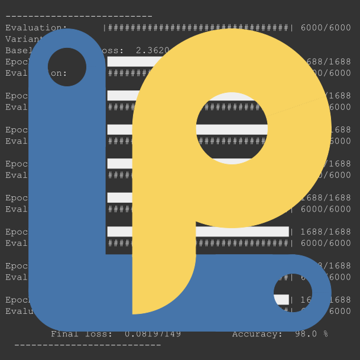
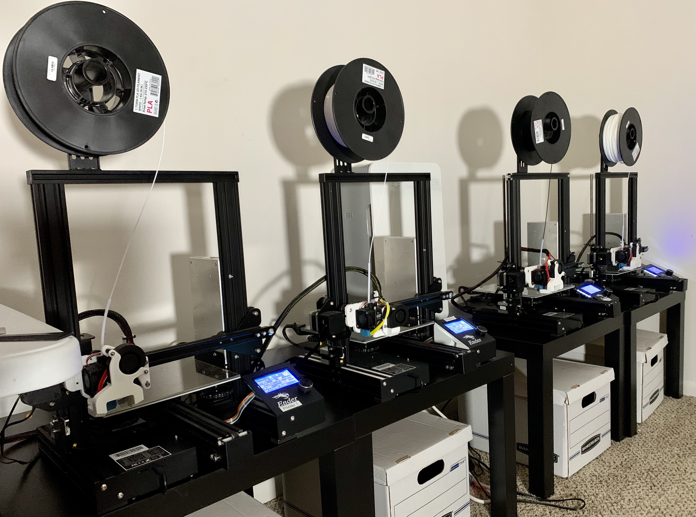
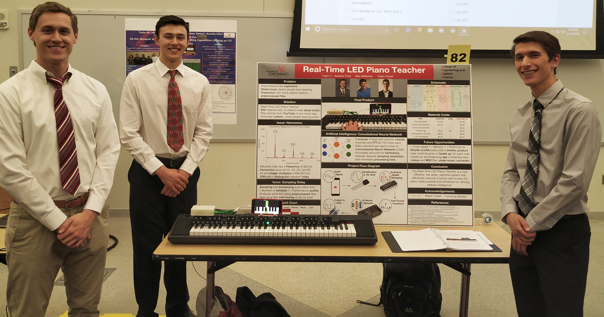
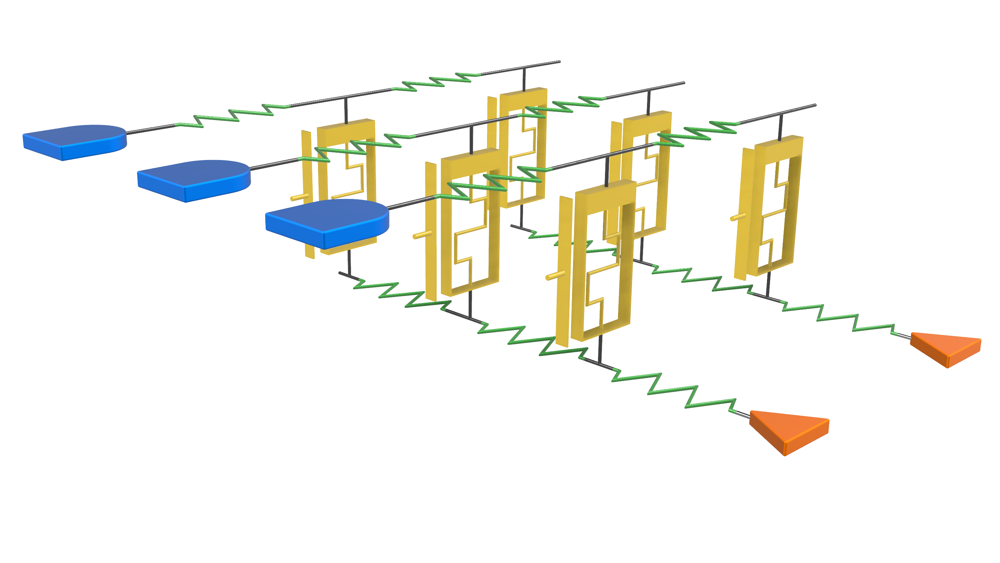

ANDREW J. FORD
Project Showcase


 Meet the 45lb, many-times-reassembled, absolute unit of a Delta 3D Printer: Frankendelta. Over the summer of 2019, my dad and I worked together to design a 3D printer with a build volume large enough to print my head (that wasn't the main goal... but it's on the list). In all fairness, my dad brought in most of the expertise from building his Kossel Mini Delta 3D printer, scaling up the things he felt worked well from that. I had experience with cartesian printers, but deltas are a different beast. With the right settings, they can print extremely quickly without quality loss due to their light effectors. Learn more on Frankendelta's GitHub page.
Meet the 45lb, many-times-reassembled, absolute unit of a Delta 3D Printer: Frankendelta. Over the summer of 2019, my dad and I worked together to design a 3D printer with a build volume large enough to print my head (that wasn't the main goal... but it's on the list). In all fairness, my dad brought in most of the expertise from building his Kossel Mini Delta 3D printer, scaling up the things he felt worked well from that. I had experience with cartesian printers, but deltas are a different beast. With the right settings, they can print extremely quickly without quality loss due to their light effectors. Learn more on Frankendelta's GitHub page.
Neuromorphic Engineering involves novel devices and practices, such as in-memory computing within Resistive Random Access Memory for low-power, high-speed, analog computing. Machine learning, currently a power and processor intensive process, benefits greatly from a well-designed neuromorphic ASIC. It's not all upsides; non-ideal behavior is often exhibited by these novel devices, and that's where LowPy comes in. LowPy injects low-level device properties into high-level CPU and GPU machine learning simulations, in Python. Learn more on LowPy's GitHub page.
How cool would it be if my hobby 3D printer(s) could print out queued parts, and push them off the print bed, ready to be shipped to customers? I've made this a reality for myself, with fordworks3D LLC. After honing in on a simple class of printable parts, finding a target audience, and a medium for reaching said audience, fordworks3D is currently operational. To check out how I've outfitted my printers, visit my Ender-3 GitHub page.
The Real-Time LED Piano Teacher was the culmination of my undergraduate studies at the University of Cincinnati. My close friends Dylan Rusek and Alex Milleman joined me in the design of a device that allows for taking a YouTube video, analyzing the frequencies present, and illuminating the LEDs above the piano key corresponding to the note in the audio. It was challenging to boil down a neural network into the small amount of memory available on the ESP-32 chip, as well as addressing the harmonics present with every note. Our group won Most Outstanding Design, and presented at the regional IEEE awards banquet in Spring 2019.
My graduate studies focused on the field of neuromorphic computing, and a few circuits kept showing up across many papers, that were 3D circuits always drawn from a top-down view. It took myself, and many lab members, months to realize that this wasn't a 2D circuit, and wasted a lot of time. So I drew up the circuit in Fusion 360, and standardized all of the part dimensions for quick connections and quite beautiful rendering. While it's still a work in progress, you can check it out on Fusion 360's cloud servers.
 In high school, I was a part of the Engineering program, which met for 2 periods per day in both Junior and Senior year. Throughout both years, myself and 3 of my classmates (and good friends) pioneered the Unmanned Aerial Systems team. My role was to predict the duration of flight time based on the weight of the payload, the capacity of the battery, and intensity of the flight. With a proper 1 to 5 ranking of flight intensity, the formula was accurate +/- 30 seconds. We went on to win the Best in Show competition for the Sinclair Tech Prep showcase, as well as placing first in Dayton's inaugural UAS competition.
In high school, I was a part of the Engineering program, which met for 2 periods per day in both Junior and Senior year. Throughout both years, myself and 3 of my classmates (and good friends) pioneered the Unmanned Aerial Systems team. My role was to predict the duration of flight time based on the weight of the payload, the capacity of the battery, and intensity of the flight. With a proper 1 to 5 ranking of flight intensity, the formula was accurate +/- 30 seconds. We went on to win the Best in Show competition for the Sinclair Tech Prep showcase, as well as placing first in Dayton's inaugural UAS competition.